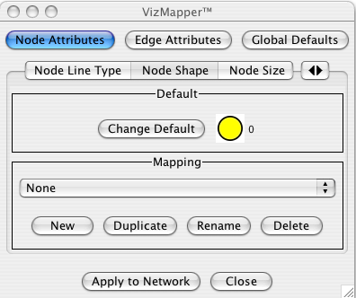

With the Cytoscape Visual Style feature, you can easily customize the visual appearance of your network. For example, you can:
- specify a default color and shape for all nodes.
- use specific line types to indicate different types of interactions, or
- visualize gene expression data along a color gradient.
All these features are available by selecting the View → Open Viz Mapper menu item or clicking on the Viz Mapper icon  button on the main button bar.
button on the main button bar.
The Cytoscape distribution includes several predefined visual styles to get you started. To demonstrate these styles, try out the following example:
Load a sample network: From the main menu, select File → Import → Network, and select sampleData/galFiltered.sif.
Layout the network: select Layout → yFiles → Organic.
Load a sample set of expression data: From the main menu, select File → Import → Attribute Matrix and select sampleData/galExpData.pvals.
By default, the Visual Style labeled “default” will be automatically applied to your network. This default style has a blue background, circular pink nodes, and blue edges (see sample screenshot below).
Figure: Using the default Visual Style.
You can change visual styles by making a selection from the Visual Style pull down menu (available directly to the right of the icon).
For example, if you select “Sample1”, a new visual style will be applied to your network, and you will see a white background and round blue nodes. Additionally, if you zoom in closer, you can see that protein-DNA interactions (specified with the label: pd) are drawn with dashed red edges, whereas protein-protein interactions (specified with the label: pp) are drawn with a light blue color (see sample screenshot below).
Figure: Using the Sample1 Visual Style. Protein-Protein interactions (solid blue lines) are now distinguishable from Protein-DNA interactions (dashed red lines).
Finally, if you select “Sample2”, gene expression values for each node will be colored along a color gradient between red and green (where red represents a low expression ratio, and green represents a high expression ratio - with thresholds set for the gal1RGexp experiment bundled with Cytoscape in the sampleData/galExpData.pvals file). See sample screenshot below:
Figure: Using the Sample2 Visual Style. Gene expression values are now displayed along a red/green color gradient.
The Cytoscape Visual Mapper has three core components: visual attributes, network attributes and visual mappers:
A visual attribute is any visual setting that can be applied to your network. For example, you can change all nodes to squares by setting the node shape visual attribute.
A network attribute is any attribute associated with a node or an edge. For example, each edge in a network may be associated with a label, such as “pd” (protein-DNA interactions), or “pp” (protein-protein interactions).
A visual mapper maps network attributes to visual attributes. For example, a visual mapper can map all protein-DNA interactions to the color blue, and all protein-protein interactions to the color red.
Cytoscape includes a large number of visual attributes. These are summarized in the tables below.
Table 15.
Visual Attributes Associated with Nodes: |
Node Color |
Node Border Color |
Node Border Line Type. The following options are available: |
|
Node Shape. The following options are available: |
|
Node Size: width and height of each node. |
Node Label: the text label for each node. |
Node Label Position: the posiiton of the label relative to the node. |
Node Font: node font and size. |
Table 16.
Visual Attributes Associated with Edges: |
Edge Color |
Edge Line Type. The following options are available: |
|
Edge Source Arrow. The following options are available: |
|
Edge Target Arrow. The following options are available: |
|
Edge Label: the text label for each edge. |
Edge Font: edge font and size. |
For each visual attribute, you can specify a default value or define a visual mapping. Cytoscape currently supports three different types of visual mappers:
Passthrough Mapper: network attributes are passed directly through to visual attributes. A passthrough mapper only works for node / edge labels. For example, a passthrough mapper can draw the common gene name on all nodes.
Discrete Mapper: discrete network attributes are mapped to discrete visual attributes. For example, a discrete mapper can map all protein-protein interactions to the color blue.
Continuous Mapper: continuous graph attributes are mapped to visual attributes. Depending on the visual attribute, there are two types of continuous mappers:
continuous to continuous mapper: for example, you can map a continuous value (0..1) to a continuous color gradient (red..green) or node/font size (10..100).
continuous to discrete mapper: for example, all values below 0 are mapped to square nodes, and all values above 0 are mapped to circular nodes. However, there is no way to smoothly morph between circular nodes and square nodes.
The matrix below shows visual mapper support for each visual property.
Table 18.
Node Properties | Passthrough Mapper | Discrete Mapper | Continuous Mapper |
Node Color | - | X | X |
Node Border Color | - | X | X |
Node Border Type | - | X | o |
Node Shape | - | X | o |
Node Size | - | X | X |
Node Label | X | X | o |
Node Font Family | - | X | o |
Node Font Size | - | X | X |
Edge Properties | Passthrough Mapper | Discrete Mapper | Continuous Mapper |
Edge Color | - | X | X |
Edge Line Type | - | X | o |
Edge Source Arrow | - | X | o |
Edge Target Arrow | - | X | o |
Edge Label | X | X | o |
Edge Font Family | - | X | o |
Edge Font Size | - | X | X |
Legend
Table 19.
Symbol | Description |
- | Mapping is not supported for specified visual property. |
X | Mapping is fully supported for specified visual property. |
o | Mapping is partially supported for specified visual property. Support for “continuous to continuous” mapping is not supported. |
To create a new visual style, select the View → Open Viz Mapper menu item, or select the VizMap icon in the main button bar. You will now see a new Visual Styles dialog box (shown below.)
Click the New button, and enter a name for your new visual style when prompted. Then click the Define button. You will now see the main Visual Styles Properties dialog box (shown below.)
From this dialog box, you can flip between Node Attributes, Edge Attributes, and Global Defaults. You can also specify default values for any visual property, or define a new custom mapping.
For example, to set the default node shape to triangles, select Node Attributes → Node Shape. Then, click the Change Default button, and select the Triangle icon from the selection list.
 To apply your visual style to your network, hit the Apply to Network button, available in the bottom of the dialog panel.
The following tutorial demonstrates how to create a new visual style with a discrete mapper. The goal is to draw Protein-DNA interactions with blue edges, and Protein-Protein interactions with red edges.
Load a sample network: From the main menu, select File → Import → Network, and select sampleData/galFiltered.sif.
Click the VizMap
button on the tool bar. Select New to create a new Visual Style. Name your new style: “Sample3”.
Click the Define button to define the newly created Visual Style.
In the “Set Visual Properties” Dialog box, select Edge Attributes → Edge Color.
Click the New button in the mapping panel.
- You will be prompted to select a mapping type: passthrough mapper, discrete mapper or continuous mapper (for an overview of the differences between these mappers, please refer to the text above) Select “discrete mapper”, and enter a descriptive name. For example, enter: Interaction_Type_Color.
- From the “Map Attribute” pull-down menu, select “interaction.” You should now see two buttons, one for pd (Protein-DNA interactions), and one for pp (Protein-Protein interactions).
- Click the “pd” button and select a blue color.
- Click the “pp” button and select a red color.
- Click the “Apply to Network" button.
You network should now show “pd” interactions in blue, and “pp” interactions in red. Sample screenshot is below
The following tutorial demonstrates how to create a new continuous mapper. The goal is to superimpose gene expression data onto a network, and to display gene expression values along a color gradient.
Load a sample network: From the main menu, select File → Import → Network, and select sampleData/galFiltered.sif.
Load a sample set of expression data: From the main menu, select File → Import → Attribute Matrix and select sampleData/galExpData.pvals.
Click the VizMap
button on the tool bar. - Select “New” to create a new Visual Style. Name your new style: “Sample4”.
- Click the “Define” button to define the newly created Visual Style.
In the “Set Visual Properties” Dialog box, select Node Attributes → Node Color.
- Click the New button in the mapping panel.
- You will be prompted to select a mapping type: passthrough mapper, discrete mapper or continuous mapper (for an overview of the differences between these mappers, please refer to the section above) Select “continuous mapper”, and enter a descriptive name. For example, enter: Color_Gradient.
- From the “Map Attribute” pull-down menu, select “gal1RGexp.”
- Click the “Add Point” button twice to add two data points.
- Set the first point to “-1”, Below = Yellow, Equal = White.
- Set the second point to “2”, Equal = Red, Above = Black.
- Click the “Apply to Network" button.
This visual mapper will set all nodes with a gal1RGexp value less than –1 to Yellow, and all nodes with a gal1RGExp value greater than 2 to Black. Additionally, all values between –1 and 2 will be painted with a white/red color gradient. Sample screenshot is below.
All Cytoscape Visual Style settings are initially loaded from a a default file called vizmap.props that cannot be altered by users. When users make changes to the visual properties, a vizmap.props file is saved in the session file. This means that assuming you save your session, you will not lose your visual properties. No other vizmap.props files are saved during normal operation.
Visual styles are automatically saved with the session they were created in. Before Cytoscape exits, you will be prompted to make sure you save the session before quitting. It is also possible to save your visual styles in a file separate from the session file. To do this, navigate to the File → Export → Vizmap Property File... menu and choose the file the properties should be saved to. This feature can be used to share visual styles with other users.
To import existing visual styles navigate to the File → Import → Vizmap Property File menu option and select a vizmap.props file. Imported properties will supplement existing properties or override existing properties if the properties have the same name. You can also specify a visual properties file using the -V command line option (cytoscape.sh -V myVizmap.props). Visual properties loaded from the command line will override any default properties.
It is possible to change the default visual properties for all sessions of cytoscape. To do this, navigate to the Edit → Preferences... menu, check the "Make Current Visual Styles Default" box in the "Default Visual Styles" section, and click "Ok". This will save the current visual styles as a vizmap.props file to your .cytoscape directory (found in your home directory). These visual styles will be loaded each time Cytoscape is started.
Cytoscape has a new feature that allows users to override visualizations created by the vizmapper for individual nodes and edges. This feature is available by right-clicking on a node or edge and then clicking on the Visual Mapping Bypass menu.
Each visual property of the node or edge is displayed. When a property is overridden, a checkmark appears next to the property and a [Reset <Property Name>] menu item appears below the checked property. By clicking the [Reset <Property Name>] option the bypass will be removed and the attribute will be displayed as defined by the VizMapper. At the bottom of the menu a Reset All option appears. When clicked, this will be remove all bypasses for the specified node or edge. In the example above you can see the the selected node size, color, and shape have been overridden. This is apparent in the appearance of the node itself and by the check marks in the popup menu.
It is important to realize that the the Visual Mapping Bypass only works for individual nodes and edges and not for all nodes or edges of a specific type. Using bypass is not particularly resource intensive, meaning you can use it as much as you like. However, if you ever find yourself repeating the same bypasses, then you should consider using the VizMapper instead.
Bypass is accomplished using special attributes with names like node.fillColor and node.shape. These are normal Cytoscape attributes and can be seen an editted in the Attribute Browser. The value of the attribute is a string representation of a property. For example, color is represented by 3 integers representing the RGB (red, green, blue) value of the color. Different types of properties have different string representations. When in doubt, just use the right click menu to create valid attribute values.
Because bypass values are specified using normal attributes, these attributes will persist between sessions as long as you save your session! If you don't save your session, you will lose whatever bypass values you set.